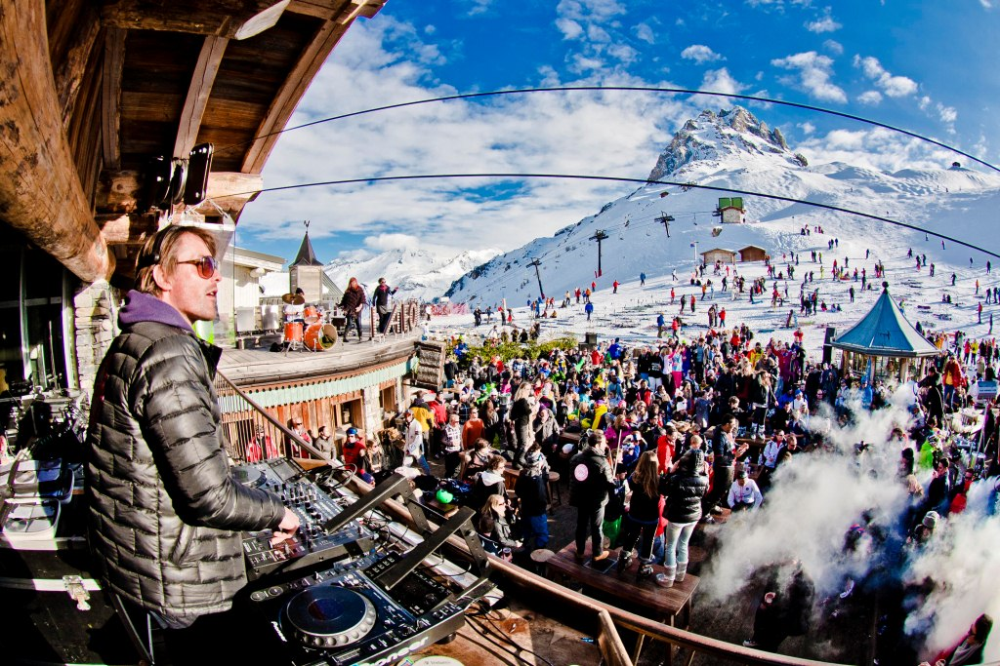

Pas l’temps de niaiser, une fois ta journée de ski passée t’as rendev’sss pour l’After-Ski!!!!
Situé au centre du village Gadz, la Grotte du Yéti te proposera des bières à des prix défiant toute concurrence. Pendant ce temps Synopsis t’engaillera avec de la bonne musique pour bien te détendre (et te préparer à la soirée qui va suivre)°.

Une découverte de la station en mode PG!
Après une tournée des bars de la stations (pour les inscrits)° on enchaîne sur une soirée qui réservera bien des surprises et des défis...